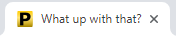

Make a Report¶
PyWebify reports are built based on the contents of a static directory
or on a text-file list of files by creating a PyWebify object. This
object requires at minimum the path to the directory containing the report
contents. You can also supply several optional configuration keyword
parameters (see Keyword Arguments below).
Basic call:
import pywebify
pywebify.PyWebify('C:\\Users\\Me\\MyReportFiles',
config='C:\\Users\\Me\\PathToMyConfigFile\config.ini')
Keyword Arguments¶
A PyWebify object accepts the following native optional arguments:
| Paramter | Data Type | Description | Default |
|---|---|---|---|
| config | str | path to config ini file (note: most style options are controlled using this file) | pywebify/config.ini |
| exclude | str | list | file names to exclude from the sidebar list of files | [] |
| make | bool | make the report upon initialization of the class | True |
| natsort | bool | use natural (human) sorting on the file list | True |
| open | bool | open the report in the default browser | True |
| report_filename | str | name of output html report file | report.html |
| report_subdir | str | name of folder to dump report file | None [default to current directory] |
| setup_subdir | str | name of folder to dump report setup files | pywebify |
| show_ext | bool | show/hide file extension in the file list | False |
| subtitle | str | report subtitle (physical location depends on template; in default config this means at the start of the navbar)
|
PyWebify |
| title | str | 
report title (physical location depends on template; in default config this means the title of the tab in the browser)
|
My Report |
| use_relative | str | toggle full vs relative paths for html links | True = use relative paths |
{kind=link}